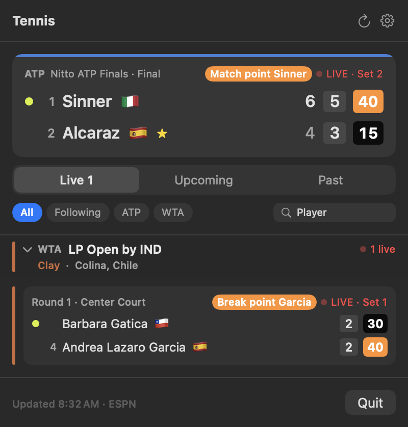
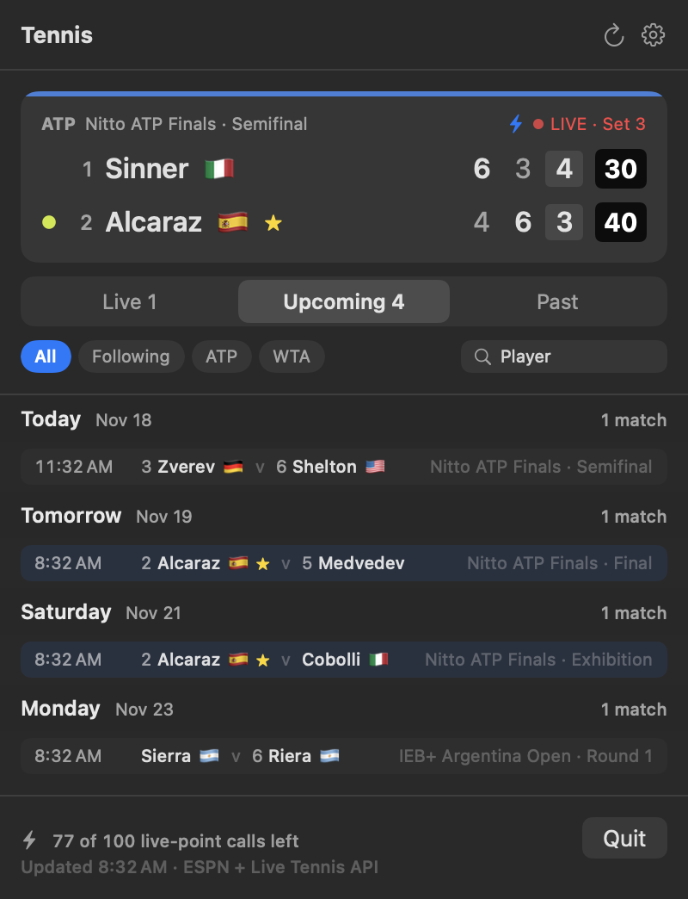
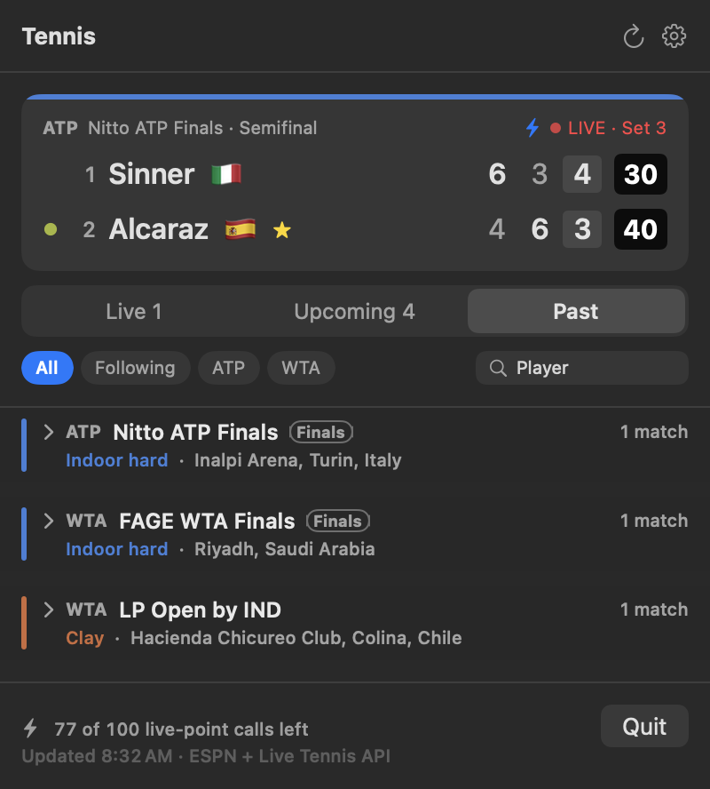

Every point, as it's played
Click any match to pin it to the menubar. You get every set, the current game's points and a dot for who's serving.
Match, set and break points turn orange, in the menubar and in the dropdown, so you know when to look up.

The whole week in one dropdown
Live groups matches by tournament. Upcoming lists the next seven days, day by day. Past keeps a week of results.
Filter by tour or by the players you follow, or search for a player. Typing “Swiatek” finds Świątek.


Alerts for the players you follow
Get a notification when their match starts, when a set is won, when serve is broken and when it's over. Pin the match or mute it straight from the alert.
Set quiet hours for the late-night matches on the other side of the world. With the optional relay, the same alerts reach your iPhone even while your Mac is asleep.
Sized for your menubar
Show every set, or only sets won when space is tight. Flags are optional too.
Small things that help
- Open from anywhere
- Press ⌃⌥T to open the dropdown without reaching for the menubar.
- Add to Calendar
- Right-click an upcoming match to put it in your calendar.
- Easy on the battery
- Checks every 30 seconds during live play and every five minutes otherwise, and pauses while your screen is locked.
- Surfaces at a glance
- Each tournament is marked with its court color: hard, clay, grass or indoor.